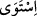
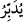

(en-Nisâ, 4/137)
2. “Önce” mânâsına gelir. Nitekim şu âyette böyledir: “Daha önce Arş’ın üzerine
istiva etmişti.” (el-A’raf 7/54). Çünkü “Arş’ı su üzerinde idi.” (Hud, 11/7) âyeti,
Arş’ın varlığının, göklerin ve yerin yaratılmasından önce olduğunu gösterir. Şu âyetin
mânâsı da bunun gibidir: “Sonra dönüşleri elbette cehennemedir.” (es-Sâffât, 37/68).
Âyetteki , ondan önceki dönüşleri, mânâsına gelmektedir. Şairin şu sözü de bu
şekildedir:
“Söyle efendi olana; önce babası efendi olana
Daha önce de dedesi efendi olana.”
3. Vav mânâsına gelir. (beraberlik vavı) Nitekim şu âyette bu mânâdadır: “Bununla
beraber îmân edenlerden oldu.” (el-Beled, 90/17)
4. İbtida (başlangıç) mânâsınadır. Bunun misâli şu âyettir: “Biz öncekileri helak
etmedik mi? Sonra da sonrakileri peşlerinden takarız.” (el-Mürselat, 77/16-17).
Yani biz onların peşine takarız, demektir.
5. Taaccüb (hayret) mânâsına gelir. “Hamd olsun o Allah’a ki, gökleri ve yeri
yarattı, karanlıkları ve aydınlığı var etti.” Sonra kâfirler (putları) kendilerini
yaratıp besleyen Rablerine eşit tutuyorlar.” (el-En’am, 6/1) Bu âyetin mânâsı, onların
buna rağmen Rablerine nasıl küfrettiklerine hayret ve taaccübü ifade eder.
Fakir (Bursevî) de şöyle der: “Sümme” burada Arş’ın mevkiinin şanını büyültmek,
göklere ve yere olan üstünlüğünü belirtmek içindir. Yoksa Bakara suresinin baş
tarafındaki “Sonra iradesi göğe yöneldi” (el-Bakara, 2/29) âyetinin tefsirinde
söyledikleri gibi zamanda bir sonralık ifade etmek için değildir. O halde te’vile hacet
yoktur.”
Bilesin ki felekler birbiri üstüne dokuz tabakadır. Kuşatıcı olan felek, Arş’ın ta
kendisidir. Tüm diğer felekleri kuşatmıştır. Kemmiyyet ve keyfiyyette feleklere
benzemesi için insan vücudu da birbiri üstüne dokuz cevherden yaratılmıştır. Bu dokuz
cevher: İlik, kemik, sinir, damarlar ve onların içerisindeki, kan, et, deri, saç ve tırnaktan
ibarettir. Peygamber Efendimiz (s.a.)’in ruhu, rûhânî varlıkların ilki olduğu gibi,
cismânî varlıkların ilki de Arş’dır. Arş, kırmızı yakuttandır. Onun bin şerefesi vardır.
Her şerefede dünyadakilerin tümü kadar alem vardır.
Şeyhzâde der ki: “Arş üzerine istivânın mânâsı, kudretle ve tasarruf nüfûzuyla istîlâ,
kaplama demektir. Arşın istivâ edildiğinin özellikle haber verilmesi, mahlûkâtın en
büyüğü olmasındandır. Bu, Allah Teâlâ’nın Arş’ın altında olanların tümünü istîlâ ve
hükmettiğini tabiî olarak ifade etmiş olur.
“İşi O tedbir eder (yönetir).”
Haddâdî şöyle der: Burada “
(sonra)” kelimesi, “__WORD__ (hükmü altına aldı)”
kelimesinden önce gelmiştir. Halbuki mânâ bakımından “
(tedbir eder)” kelimesinin
öncesine gelir. Sanki şöyle buyrulmuş gibidir: “Arş’ı istivâ edip hükmü altına aldığı